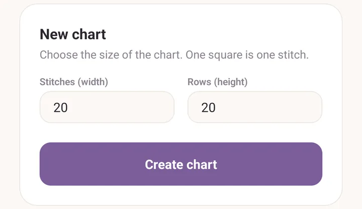
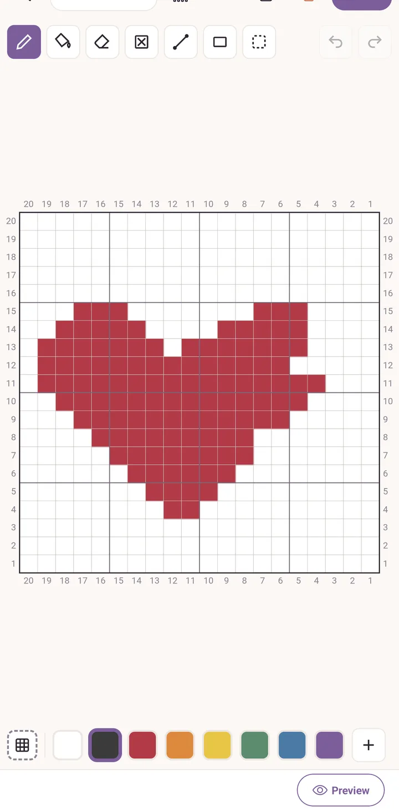
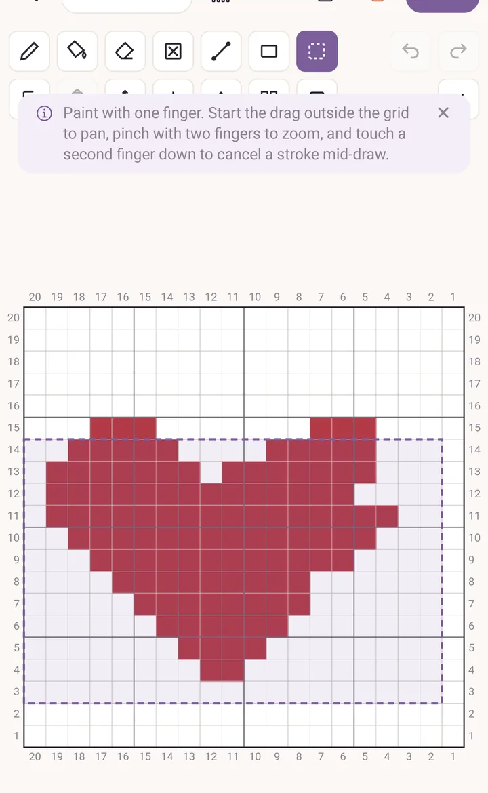
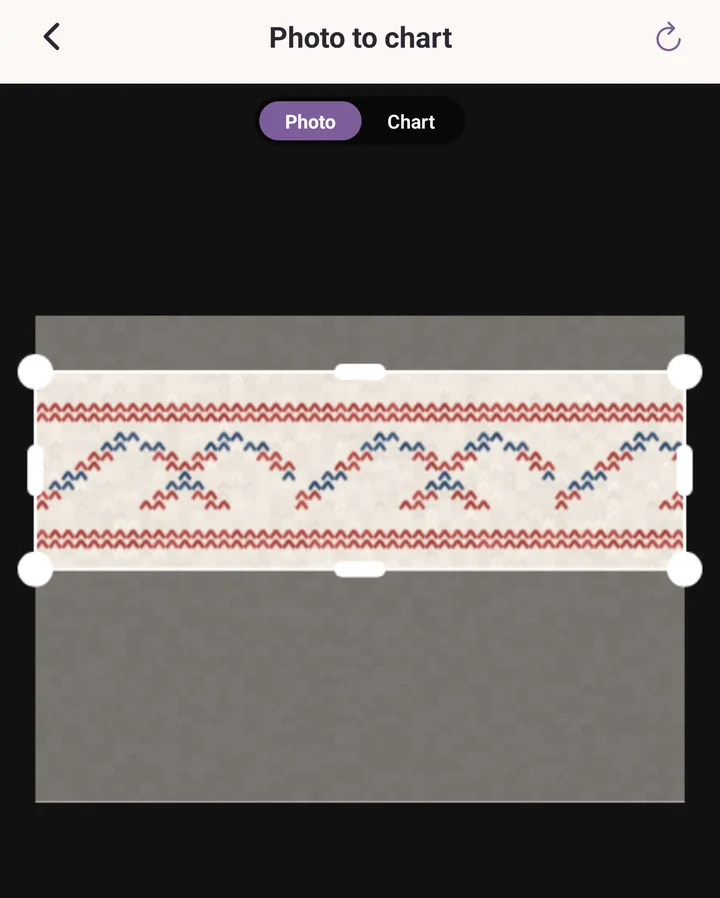
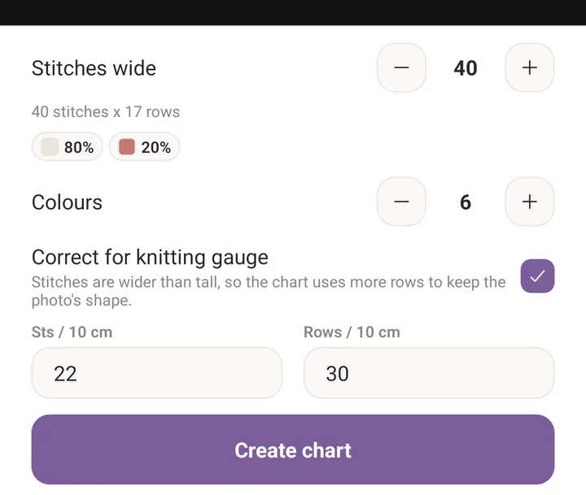

Draw a chart
By the end of this you will have drawn a colourwork chart, seen it as knitted fabric, saved it as a PDF, and turned a photo into a second chart.
Part one: draw a chart
- Tap More, then Colour charts.
- Tap New chart.
- Type the size. One square is one stitch, so try 20 for both Stitches (width) and Rows (height).
- Tap Create chart.

- Tap a colour in the strip along the bottom to select it.
- Draw on the grid with one finger. Pencil is already chosen.
- To pan, start the drag outside the grid. To zoom, pinch. To abandon a stroke halfway, touch down a second finger.

- Tap + at the end of the colour strip to add a second colour, then Use this colour.
- Tap Select, drag a box around your motif, then tap Repeat to tile it across and down. One tap on Undo takes the whole repeat back if you do not like it.

- Tap Preview under the grid.
- Type your Gauge per 10 cm into Sts and Rows. The line at the bottom now says what the piece measures.
- Try the 3D, 2D and Chart looks, and step Repeat the chart up to see the motif tiled.

- Go back, then tap More at the top right, Export, and choose PDF. That is the printable version, numbered on all four edges.

Part two: turn a photo into a chart
- Go back to Colour charts and tap From a photo.
- Tap Take a photo or Choose from library.
- Drag the corners of the box to frame the part you want.

- Set Stitches wide. The line underneath tells you how many rows that works out as.
- Set Colours. Start low, around four to six, and add more only if the picture needs them.
- Turn on Correct for knitting gauge and type your Sts / 10 cm and Rows / 10 cm. Stitches are wider than they are tall, so this adds rows to keep the picture's shape when it is knitted.
- Tap Chart at the top to see the result, and Photo to compare.
- Tap Create chart. The chart is saved and opens in the editor, where you can tidy it up by hand.

If it goes wrong
- You painted a stroke you did not mean to. Touch a second finger down before you lift, and the stroke is dropped. If you already lifted, tap Undo.
- The grid will not move. Panning has to start outside the grid. A drag that begins on a square paints instead.
- The photo chart looks squashed on screen. That is Correct for knitting gauge doing its job. The chart looks tall because the knitted result will not be.
Next
- Colour charts: every tool, no stitch squares, colour counts, and following a chart while you knit.